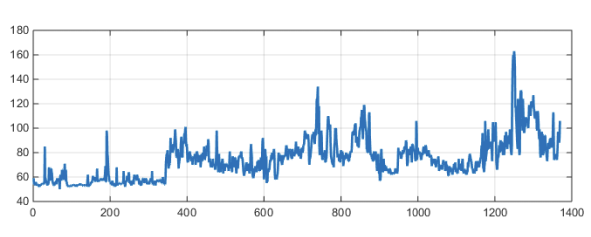
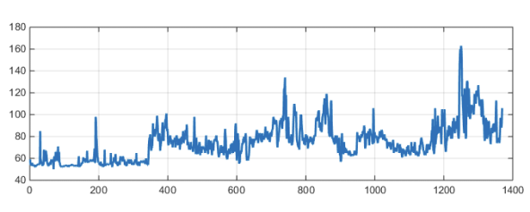

×
Käyttöopas
Navigaatio:
Infopankki
Sisältää tietoa hyvinvointiin ja terveyteen liittyen.
Liikuntasuunnitelma
Ammattilaisen tekemä liikuntasuunnitelma löytyy täältä.
Aktiviteetit ja päiväkirja
Täältä löydät Polarin urheilukellolla suorittamasi urheilusuoritukset. Lisäksi voit tarkastella samasta näkymästä omia päiväkirjamerkintöjä.
Mietelause
Täältä löydät päivän mietelauseen. Sen myötä toivomme kasvattavamme motivaatiotasi liikuntaa kohtaan.
Kirjaudu ulos
Kirjaudu ulos palvelusta.
Etusivu:
Viimeisin HRV-mittaus
Täältä löydät viimeisimmän HRV-mittauksen. HRV-mittaus on mittaus, joka kertoo kehon stressitasosta. Mittaus on suoritettu Polarin urheilukellolla.
Päivän aktiivisuus
Urheilukello siirtää päivittäistä aktiivisuutta sivustolle. Tässä näet päivän askeleiden määrän. Suorita tavoitteita niin hyvä tulee!
Lisää uusi päiväkirjamerkintä
Kirjaa päivän mietteesi tähän. Se voi liittyä juuri suorittamaasi urheilusuoritukseen tai päivän mielialaan. Tärkeintä olisi havainnoida omaa oloa päivittäin, jotta nähdään miten mieliala kehittyy testausjakson aikana.
 
